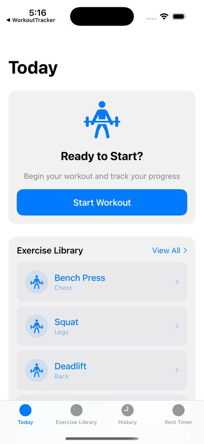
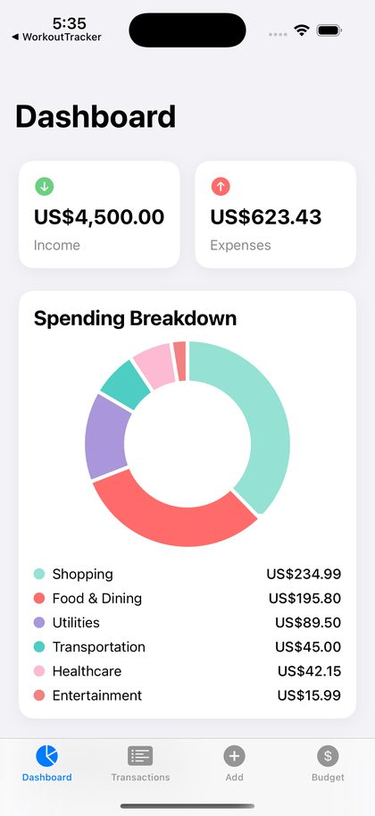
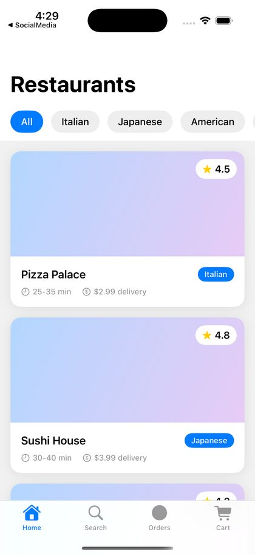
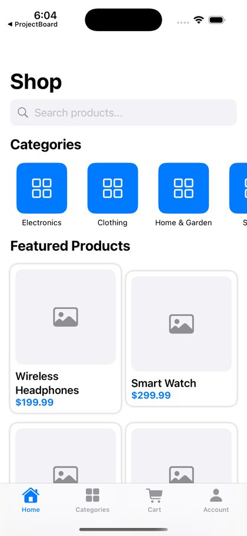
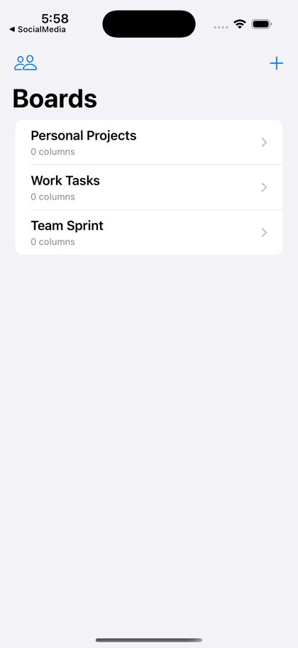

SwiftGen AI
Multi-agent iOS app generator · solo · prepared for Y CombinatorYou describe an app in one sentence. SwiftGen plans it, writes native SwiftUI, compiles it, repairs what breaks, launches it in the iOS Simulator and streams it to your browser, where you keep changing it by chat.
I built it alone: 315 commits in three and a half months, about 90,000 lines. The interesting part isn't the generation. It's everything that stops a model's output from reaching a user unchecked.
- 01Classify. Intent and complexity decide the route and the model.
- 02Generate. A router across Claude Sonnet and Opus, Gemini, Grok and GPT, with fallbacks and truncation recovery.
- 03Pre-validate. About 970 injected rules and 193 fix patterns, no LLM call.gate
- 04Build and heal. Three repair attempts, escalating to a stronger model.gate
- 05Verify. Launch, screenshot, process check, crash-log scan.gate
- 06Learn. 600+ repairs logged; repeat fixes promoted into the validator.
| Measure | Result | Basis |
|---|---|---|
| New app, idea to running | 66% | 333 generations · 71% over the last 100 |
| Change by chat | 83% | 166 modifications |
| Failed builds rescued | ~46% | by the healer loop |
| Time to a running app | 2.4m | median, successful runs |
Measured January to April 2026 on that generation of models (Claude Sonnet 4.6 and Opus 4.6, GPT-4.1, Gemini 2.5). The harness doesn't care which model it tests, so I can re-run it on current ones.





Fig. 2. Simulator screenshots taken by the pipeline's own verify step, Jan 2026.